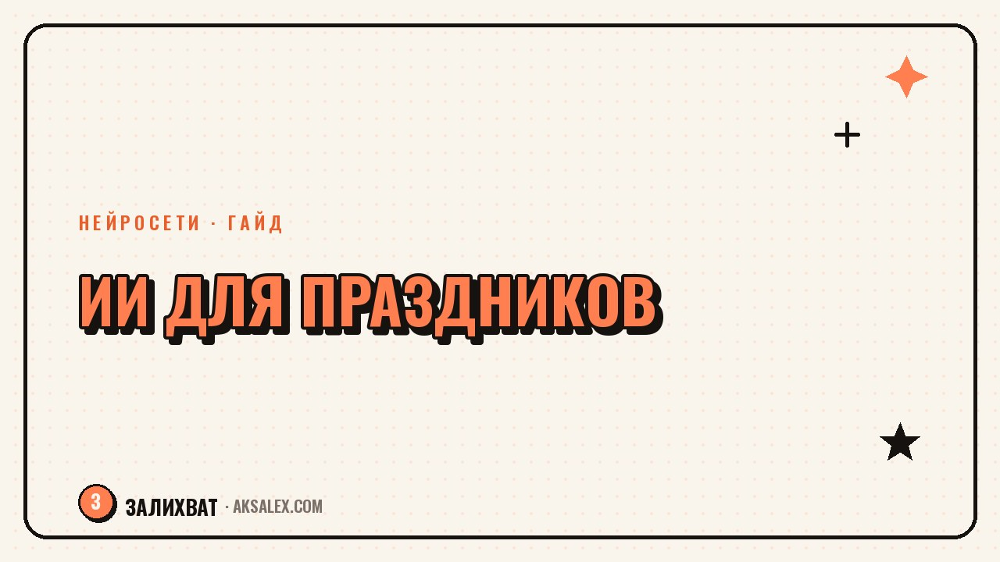

Нейросети для организатора праздников: гайд

Организатор праздников держит в голове десяток дел одновременно: сценарий, подрядчиков, смету, переписку с клиентом, который меняет решение в третий раз за неделю. Нейросети не заменят вкус и умение договариваться с капризным флористом, но снимают часть рутины - черновики сценариев, визуализацию оформления, расчёт бюджета. Разберём, что из этого реально работает в event-индустрии и с чего начать, если ты ведёшь праздники одна, без команды.
Какие задачи организатора можно отдать нейросети
Event-организатор тратит время не только на креатив, но и на рутину: таймлайн дня, список подрядчиков, повторяющиеся письма с условиями работы. Это задачи, где нейросеть экономит часы - шаблон собирается один раз и подгоняется под каждое мероприятие.
Творческую часть - идею концепции, подбор площадки под заказчика, живое общение на празднике - нейросеть не заменит. Но она помогает структурировать уже придуманную идею: разложить её на сценарий по минутам и смету.
Где риск выше пользы
Не стоит доверять нейросети финальные переговоры с подрядчиками и решения по бюджету клиента - это зона ответственности организатора. Генерация визуала оформления тоже только ориентир: реальные цветы, ткани и свет на площадке будут отличаться от картинки.
Сценарий праздника и таймлайн
Сценарий - самая благодарная для нейросети задача, потому что структура праздников повторяется: сбор гостей, приветствие, конкурсы, торт, танцы. ChatGPT или YandexGPT быстро собирают черновик таймлайна, если дать вводные: количество гостей, возраст, формат (банкет, фуршет, выезд на природу), длительность.
Как составить запрос, чтобы получить рабочий черновик
- Укажи тип праздника и повод: детский день рождения, свадьба, корпоратив.
- Назови количество гостей и их возраст - от этого зависят конкурсы и паузы.
- Опиши площадку: закрытое помещение, улица, формат с рассадкой или без.
- Попроси расписать таймлайн по 15-минутным блокам с указанием ответственных.
Черновик почти всегда нужно переработать: убрать общие фразы, добавить фирменные фишки. Но каркас, на который уходило бы полтора часа с нуля, собирается за десять минут.
Визуализация оформления для клиента
Клиент часто не может объяснить словами, что хочет: «что-то в пастельных тонах, но не скучно». Генераторы изображений (Midjourney, Canva AI, Freepik AI) помогают за минуты накидать несколько вариантов оформления зала по описанию - цвет, стиль, декор, свет.
Это снимает классическую проблему event-индустрии: клиент утвердил идею на словах, а в день праздника оказывается, что представлял всё иначе. Картинка на этапе обсуждения экономит нервы обеим сторонам и сокращает число правок в последний момент.
Пока клиент не увидел картинку, он не знает, чего хочет - он только думает, что знает.
Смета, переписка и документы
Смета праздника - это десятки строк: площадка, кейтеринг, декор, фото, музыка, непредвиденные расходы. Нейросеть не рассчитает реальные цены подрядчиков, но помогает быстро собрать структуру сметы по шаблону и пересчитать её, если клиент меняет количество гостей или формат.
Переписка с клиентами и подрядчиками
Типовые письма - подтверждение бронирования даты, список того, что нужно от клиента, напоминание о предоплате - удобно написать один раз с помощью нейросети и использовать как шаблон. Для договоров и официальных документов нейросеть годится только для черновика формулировок, финальную версию должен проверить юрист или сам организатор.
Сравнение сервисов для event-организатора
Для старта не нужно подписываться на всё подряд - вот база, которая закрывает основные задачи организатора праздников.
| Сервис | Задача | Цена | Сложность |
|---|---|---|---|
| ChatGPT | Сценарии, письма, смета | Бесплатно / от 1700 ₽/мес | Низкая |
| Midjourney | Визуализация оформления | От 10 $/мес | Средняя |
| Canva AI | Мудборды, приглашения | Бесплатно / от 1000 ₽/мес | Низкая |
| YandexGPT | Тексты и переписка на русском | Бесплатно | Низкая |
| Google Таблицы + ИИ-формулы | Расчёт сметы | Бесплатно | Средняя |
С чего начать без лишних трат
Не нужно сразу покупать все подписки - начни с одной повторяющейся задачи, которая чаще всего крадёт вечер перед праздником: сценарий, смета или переписка с клиентами.
План на первую неделю
- День 1-2: собери в ChatGPT или YandexGPT шаблон таймлайна для своего самого частого формата праздника.
- День 3-4: попроси нейросеть накидать 3-4 варианта оформления по текстовому описанию и сравни с реальными материалами.
- День 5-7: оформи шаблоны писем для клиентов и подрядчиков, сохрани их в заметках или CRM.
После недели станет понятно, какие шаблоны реально экономят время на следующих праздниках, а что проще делать по-старому. Дальше добавляй новые задачи по одной, опираясь на свой рабочий ритм, а не на чужой список инструментов.
Частые вопросы
Можно ли доверить нейросети весь сценарий праздника без правок
Нет, черновик сценария почти всегда нужно переработать: добавить фирменные фишки и убрать общие фразы. Нейросеть экономит время на каркасе, но авторскую часть организатор дорабатывает сам.
Насколько точна визуализация оформления, которую генерирует нейросеть
Это ориентир по цвету, стилю и композиции, а не точная копия будущего декора. Реальные цветы, ткани и освещение на площадке всегда немного отличаются от сгенерированной картинки.
Можно ли вести event-бизнес на нейросетях без ассистента
Да, для одного организатора без команды нейросети закрывают часть рутины - сценарии, письма, структуру сметы - и реально экономят несколько часов в неделю. Но переговоры с подрядчиками и площадками всё равно ведёт человек.
Нужна ли платная подписка на нейросети для небольшого агентства
На старте хватает бесплатных версий ChatGPT и YandexGPT для текстов. Платный Midjourney стоит подключать, когда визуализация оформления становится регулярной частью продажи услуги клиентам.
Как объяснить нейросети задачу по смете праздника
Укажи формат праздника, количество гостей, список статей расхода (площадка, кейтеринг, декор, фото) и попроси собрать структуру таблицы. Точные цены подрядчиков организатор вносит сам, нейросеть только собирает каркас.
Раз тема оказалась полезной, вот что почитать следующим. Нейросети для мастера маникюра: запись, визуализация дизайна, контент и переписка с клиентами без лишних часов.
Читать статью →а не вручную